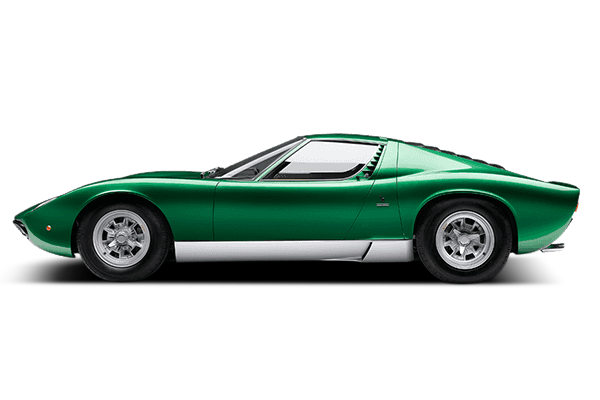
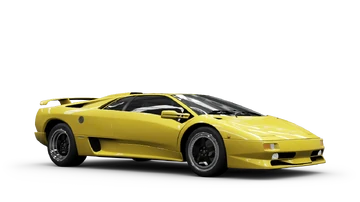

INTRODUCCÓN

En esta página hablarems sobre el creador de Lamborghini y dos de sus modelos mas históricos el miura y el diablo.
FERRUCIO LAMBORGHINI
Ferruccio Lamborghini, nacido en 1916 en una familia agrícola italiana, se inclinó desde joven por la mecánica y, tras trabajar en la Segunda Guerra Mundial, fundó Lamborghini Trattori convirtiéndose en un exitoso industrial. Su inconformidad con fallos en los Ferrari que poseía y una respuesta despectiva de Enzo Ferrari lo impulsaron a crear en 1963 Automobili Lamborghini, marca que revolucionó el mundo del superdeportivo con modelos como el Miura. Identificada por el toro de su signo zodiacal, la firma se consolidó como un referente mundial en diseño y rendimiento. Ferruccio se retiró en los años setenta y pasó sus últimos años dedicado al vino y al turismo rural hasta su muerte en 1993, dejando un legado perdurable en la industria automotriz.
MIURA
El Lamborghini Miura, producido entre 1966 y 1972, es ampliamente reconocido como el primer superdeportivo de la historia, gracias a su innovadora configuración de motor V12 en posición central‑trasera y a su diseño adelantado a su tiempo. Concebido por jóvenes ingenieros de Lamborghini y vestido con una carrocería creada por Marcello Gandini para Bertone, el Miura combinaba un chasís ligero con una estética fluida y agresiva que redefinió por completo el lenguaje del automóvil deportivo. Su motor transversal, visible en los primeros prototipos como una declaración de intenciones, ofrecía entre 350 y 385 CV, permitiéndole alcanzar velocidades que lo situaban entre los coches más rápidos del mundo. Más allá de su rendimiento, el Miura se convirtió en un icono cultural: símbolo de exclusividad, belleza y audacia técnica, influyó en generaciones posteriores de superdeportivos y consolidó a Lamborghini como una marca capaz de desafiar y superar los límites establecidos por la industria automotriz.
DIABLO
El Lamborghini Diablo es uno de los superdeportivos más emblemáticos de la historia del automóvil, concebido para suceder al legendario Countach y llevar las prestaciones de la marca a un nuevo nivel. Su desarrollo comenzó a mediados de los años 80 bajo el Proyecto 132, con la ambición explícita de crear el coche de producción más rápido del mundo, capaz de superar los 315 km/h. Esta meta se alcanzó en 1990, cuando el Diablo debutó oficialmente y logró una velocidad máxima de **al menos 325 km/h, además de una aceleración de 0 a 100 km/h en 4,5 segundos, cifras que lo situaron en la élite de los superdeportivos de su época . Diseñado por Marcello Gandini, el Diablo mantuvo las líneas angulosas y agresivas características de Lamborghini, incorporando puertas de tijera y una silueta baja y ancha que transmitía potencia incluso en reposo. Su motor **V12 de entre 5,7 y 6,0 litros**, montado en posición central‑trasera, entregaba entre 492 y 604 CV, dependiendo de la versión, y se combinaba con tracción trasera o total según el modelo . Durante su producción, entre 1990 y 2001, se fabricaron **2.884 unidades**, incluyendo variantes como el VT, SV, SE30, Roadster y la exclusiva versión 6.0 VT, cada una con mejoras en aerodinámica, potencia y comportamiento dinámico . El Diablo no solo consolidó la reputación de Lamborghini como fabricante de máquinas extremas, sino que también marcó una transición importante en la marca, coincidiendo con su paso de Chrysler al Grupo Volkswagen. Hoy, el Diablo sigue siendo un icono codiciado, símbolo de una era en la que la ingeniería y la audacia estética se unieron para crear un superdeportivo inolvidable.